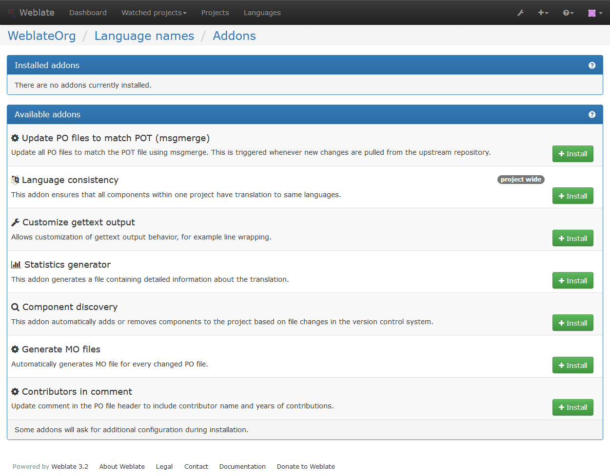
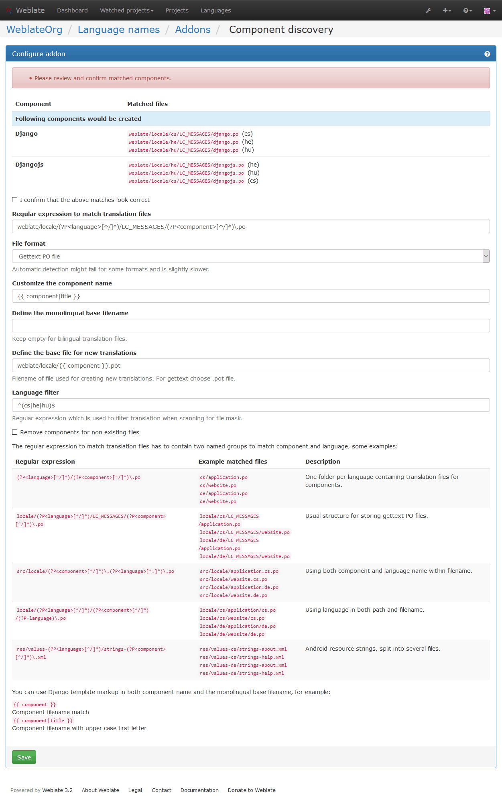

アドオン¶
バージョン 2.19 で追加.
アドオンは翻訳のワークフローをカスタマイズする手段を提供します。アドオンは翻訳コンポーネントにインストールすることができ、これによりアドオンは舞台裏で働きを開始します。アドオンの管理メニューは翻訳コンポーネントの Manage メニューの中にあります。
組み込みアドオン¶
Cleanup translation files¶
Update all translation files to match the monolingual base file. For most file formats, this means removing stale translation keys no longer present in the base file.
Language consistency¶
This addon ensures that all components within one project have translation to same languages.
Unlike most others, this addon operates on whole project.
Component discovery¶
This addon automatically adds or removes components to the project based on file changes in the version control system.
It is similar to the import_project management command, but the
major difference is that it is triggered on every VCS update. This way you can
easily track multiple translation components within one VCS.
To use component discovery, you first need to create one component which will act as master and others will use Weblate internal URLs to it as a VCS configuration. You should choose the one which is less likely to disappear in the future here.
Once you have one component from the target VCS, you can configure the discovery addon to find all translation components in the VCS. The matching is done using regular expression so it can be quite powerful, but it can be complex to configure. You can use examples in the addon help for some common use cases.
Once you hit save, you will be presented with a preview of matched components, so you can check whether the configuration actually matches your needs:
Flag unchanged translations to need edit¶
バージョン 3.1 で追加.
Whenever a new translation string is imported from the VCS and it matches source strings, it is flagged as needing editing in Weblate. This is especially useful for file formats including all strings even if they are not translated.
Flag new source strings to need edit¶
Whenever a new source string is imported from the VCS, it is flagged as needing editing in Weblate. This way you can easily filter and edit source strings written by the developers.
Flag new translations to need edit¶
Whenever a new translation string is imported from the VCS, it is flagged as needing editing in Weblate. This way you can easily filter and edit translations created by the developers.
Statistics generator¶
This addon generates a file containing detailed information about the translation. You can use Django template in both filename and content, see Template markup for detailed markup description.
For example generating summary file for each translations:
- Name of generated file
locale/{{ language_code }}.json- Content
{ "language": "{{ language_code }}", "strings": "{{ stats.all }}", "translated": "{{ stats.translated }}", "last_changed": "{{ stats.last_changed }}", "last_author": "{{ stats.last_author }}", }
Contributors in comment¶
Update comment in the PO file header to include contributor name and years of contributions.
Update ALL_LINGUAS variable in the configure file¶
Updates the ALL_LINGUAS variable in configure, configure.in or configure.ac files, when a new translation is added.
Customize gettext output¶
Allows customization of gettext output behavior, for example line wrapping.
Update LINGUAS file¶
Updates the LINGUAS file when a new translation is added.
Generate MO files¶
Automatically generates MO file for every changed PO file.
Update PO files to match POT (msgmerge)¶
Update all PO files to match the POT file using msgmerge. This is triggered whenever new changes are pulled from the upstream repository.
Customize JSON output¶
Allows to customize JSON output behavior, for example indentation or sorting.
Formats the Java properties file¶
This addon sorts the Java properties file.
Customizing list of addons¶
List of addons is configured by WEBLATE_ADDONS, to add another addon
simply include class absolute name in this setting.
アドオンを書く¶
自分でアドオンを書くこともできますが、そのために必要なのは、BaseAddon のサブクラスを作成し、アドオンのためのメタデータを定義し、実際の処理を行うコールバックを実装することだけです。
より詳しくは、次のアドオン例をご覧ください。
# -*- coding: utf-8 -*-
#
# Copyright © 2012 - 2018 Michal Čihař <michal@cihar.com>
#
# This file is part of Weblate <https://weblate.org/>
#
# This program is free software: you can redistribute it and/or modify
# it under the terms of the GNU General Public License as published by
# the Free Software Foundation, either version 3 of the License, or
# (at your option) any later version.
#
# This program is distributed in the hope that it will be useful,
# but WITHOUT ANY WARRANTY; without even the implied warranty of
# MERCHANTABILITY or FITNESS FOR A PARTICULAR PURPOSE. See the
# GNU General Public License for more details.
#
# You should have received a copy of the GNU General Public License
# along with this program. If not, see <https://www.gnu.org/licenses/>.
#
from __future__ import unicode_literals
from django.utils.translation import ugettext_lazy as _
from weblate.addons.base import BaseAddon
from weblate.addons.events import EVENT_PRE_COMMIT
class ExampleAddon(BaseAddon):
# Filter for compatible components, every key is
# matched against property of component
compat = {
'file_format': frozenset((
'po', 'po-mono',
)),
}
# List of events addon should receive
events = (EVENT_PRE_COMMIT,)
# Addon unique identifier
name = 'weblate.example.example'
# Verbose name shown in the user interface
verbose = _('Example addon')
# Detailed addon description
description = _('This addon does nothing it is just an example.')
# Callback to implement custom behavior
def pre_commit(self, translation, author):
return
アドオンからスクリプトを実行する¶
アドオンを外部スクリプトを実行するために使うこともできます。この機能は以前は Weblate の一部でしたが、現在はアドオンとスクリプトをラップするコードを少しばかり書かなければなりません。
# -*- coding: utf-8 -*-
#
# Copyright © 2012 - 2018 Michal Čihař <michal@cihar.com>
#
# This file is part of Weblate <https://weblate.org/>
#
# This program is free software: you can redistribute it and/or modify
# it under the terms of the GNU General Public License as published by
# the Free Software Foundation, either version 3 of the License, or
# (at your option) any later version.
#
# This program is distributed in the hope that it will be useful,
# but WITHOUT ANY WARRANTY; without even the implied warranty of
# MERCHANTABILITY or FITNESS FOR A PARTICULAR PURPOSE. See the
# GNU General Public License for more details.
#
# You should have received a copy of the GNU General Public License
# along with this program. If not, see <https://www.gnu.org/licenses/>.
#
"""
Example pre commit script
"""
from __future__ import unicode_literals
from django.utils.translation import ugettext_lazy as _
from weblate.addons.events import EVENT_PRE_COMMIT
from weblate.addons.scripts import BaseScriptAddon
class ExamplePreAddon(BaseScriptAddon):
# Event used to trigger the script
events = (EVENT_PRE_COMMIT,)
# Name of the addon, has to be unique
name = 'weblate.example.pre'
# Verbose name and long descrption
verbose = _('Execute script before commit')
description = _('This addon executes a script.')
# Script to execute
script = '/bin/true'
# File to add in commit (for pre commit event)
# does not have to be set
add_file = 'po/{{ language_code }}.po'
スクリプトは、そのコンポーネントの VCS リポジトリのルートディレクトリをカレントディレクトリとして実行されます。
加えて、以下の環境変数を使うことができます。
-
WL_VCS¶ 使用しているバージョン管理システム。
-
WL_REPO¶ 上流のリポジトリのURL。
-
WL_PATH¶ VCS リポジトリの絶対パス。
-
WL_BRANCH¶ バージョン 2.11 で追加.
現在のコンポーネント内で設定されたリポジトリのブランチ。
-
WL_FILEMASK¶ 現在のコンポーネントのためのファイルマスク。
-
WL_TEMPLATE¶ 単一言語翻訳テンプレートのファイル名（この値は空のこともあります）。
-
WL_NEW_BASE¶ バージョン 2.14 で追加.
新しい翻訳の作成に使われるファイルのファイル名（この値は空のこともあります）。
-
WL_FILE_FORMAT¶ 現在のコンポーネントで使われているファイル形式。
-
WL_LANGUAGE¶ 現在処理中の翻訳の言語（コンポーネントのレベルのフックでは使えません）。
-
WL_PREVIOUS_HEAD¶ 前回更新の HEAD（更新後に実行するフックでのみ利用可能です）。
参考
更新後のリポジトリ処理¶
原文が変更されたときは、翻訳ファイルを更新するために、更新後リポジトリ処理を使うことができます。これを行うためには、Weblate は VCS にコミットされたファイルだけを見ていることを覚えておいてください。このためスクリプトの一部で変更をコミットする必要があるのです。
例えば gulp を使った以下のようなコードでこれを行うことができます。
#! /bin/sh
gulp --gulpfile gulp-i18n-extract.js
git commit -m 'Update source strings' src/languages/en.lang.json
コミット前の翻訳処理¶
リポジトリに翻訳をコミットする前に、多くの場合で自動的に翻訳に何か変更を加えたいかもしれません。コミット前スクリプトがまさにこれをできる場となります。
現在の翻訳のファイル名で構成される単一のパラメータが渡されます。